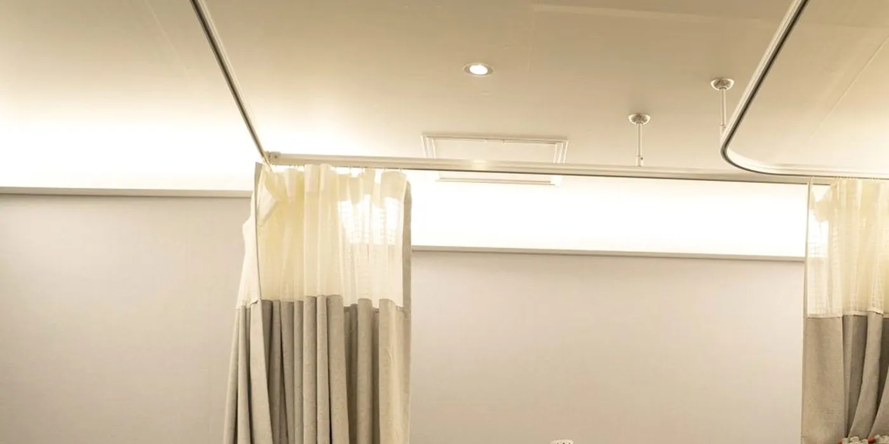

큰 코골이와 자다가 숨이 멎는 듯한 모습, 아침 두통과 낮의 심한 졸음이 함께 있다면 수면무호흡일 수 있어 수면 검사를 먼저 권합니다. 한의원에서는 체중, 술, 코막힘, 자세 같은 생활 요인을 함께 살피며 검사 결과를 대신하지 않습니다.
여쭙는 것
- 가족이 숨이 멎는 것 같다고 말한 적이 있나요? 얼마나 자주인가요?
- 아침에 입이 마르거나 머리가 아픈가요?
- 충분히 자도 낮에 졸리고, 운전이나 회의 중에 졸음을 참기 어렵나요?
생활에서 해 볼 것
- 자기 전 술과 임의로 먹는 수면 보조제 피하기
- 옆으로 누워 자 보고, 등 뒤에 베개를 받쳐 자세 유지하기
- 코가 막히는 날은 자기 전 실내 습도와 먼지를 점검하기
한의원에서 함께 살필 것
- 수면 검사 뒤 체중, 식사, 술 같은 생활 습관을 함께 정리하고 싶은 경우
- 코막힘과 비염 때문에 입을 벌리고 자는 경우, 코와 잠의 상태를 함께 살핍니다.
- 자도 개운하지 않고 아침에 몸이 무거운 경우, 목·어깨 긴장과 잠의 질을 함께 살핍…
먼저 확인이 필요한 신호
- 자다가 숨이 멎는 모습이 자주 보이는 경우(수면 검사로 먼저 확인)
- 운전 중 졸음을 참기 어려운 경우
- 아침 두통과 함께 혈압이 잘 조절되지 않는 경우

코골이는 흔하지만 숨이 멎는 듯한 모습이 함께 있다면 잠의 질뿐 아니라 건강 전체에 영향을 줄 수 있어 확인이 필요합니다. 본인은 모르고 가족이 먼저 알아차리는 경우가 많아, 함께 자는 분의 이야기가 중요한 단서가 됩니다. 수면무호흡은 수면 검사로 확인하며, 증상만으로 단정하지 않습니다.
왜 이런 불편이 생길 수 있나요
- 체중이 늘고 목 주변이 두꺼워지면 자는 동안 숨길이 좁아지기 쉽습니다.
- 자기 전 술이나 수면제는 목 주변 근육을 더 늘어지게 해 숨길을 좁힐 수 있습니다.
- 비염이나 코막힘이 있으면 입으로 숨을 쉬게 되어 코골이가 심해질 수 있습니다.
- 똑바로 누운 자세에서는 혀와 목젖이 뒤로 처져 숨길이 좁아지기 쉽습니다.
- 턱이 작거나 편도가 큰 경우처럼 타고난 구조가 영향을 주기도 합니다.

자주 하는 오해
- 코골이는 피곤해서 그런 것이니 괜찮다고 여기기 쉽지만, 숨 멈춤이 함께 있다면 확인이 필요한 신호일 수 있습니다.
- 마른 사람은 수면무호흡이 없다고 생각하기 쉽지만, 턱 구조나 편도, 코막힘처럼 체중 말고도 영향을 주는 것이 있습니다.
- 술을 마시면 푹 잔다고 여기기 쉽지만, 술은 목 주변 근육을 늘어지게 해 코골이와 숨 멈춤을 더 심하게 할 수 있습니다.
- 본인이 모르니 괜찮다고 생각하기 쉽지만, 수면무호흡은 본인보다 가족이 먼저 알아차리는 경우가 많습니다.
예를 들면 이런 경우입니다
- 예를 들어 최근 체중이 늘고 회식 뒤 코골이가 유난히 심하다는 말을 듣는 직장인이라면, 수면 검사를 먼저 권하고 저녁 술과 늦은 식사를 줄이는 계획을 함께 정합니다.
- 예를 들어 비염으로 코가 막혀 입을 벌리고 자는 학생이라면, 코막힘과 잠의 모습을 함께 여쭙고 침실 습도와 먼지부터 점검합니다.
- 예를 들어 배우자가 밤에 숨을 멈추는 모습을 여러 번 봤다는 어르신이라면, 낮 졸음과 아침 두통이 있는지 확인하고 수면 검사가 가능한 의료기관을 먼저 안내합니다.

먼저 이렇게 여쭙니다
- 가족이 숨이 멎는 것 같다고 말한 적이 있나요? 얼마나 자주인가요?
- 아침에 입이 마르거나 머리가 아픈가요?
- 충분히 자도 낮에 졸리고, 운전이나 회의 중에 졸음을 참기 어렵나요?
- 최근 체중이 늘었나요? 자기 전에 술을 드시나요?
- 밤에 소변 때문에 자주 깨나요?
스스로 점검해 보세요
- 가족에게 코를 크게 곤다는 말을 자주 듣는다
- 자다가 숨이 멎는 것 같다는 말을 들은 적이 있다
- 아침에 입이 마르고 머리가 무겁다
- 충분히 자도 낮에 졸음을 참기 어렵다
- 최근 1~2년 사이 체중이 늘었다
- 자기 전에 술을 마시는 날이 많다
- 밤에 소변 때문에 자주 깬다
여러 항목에 해당하고 숨 멈춤이 있다면 수면 검사로 확인하는 것이 먼저입니다. 자가 체크는 진단을 대신하지 않습니다.

일상에서 먼저 해 볼 수 있는 것
- 자기 전 술과 임의로 먹는 수면 보조제 피하기
- 옆으로 누워 자 보고, 등 뒤에 베개를 받쳐 자세 유지하기
- 코가 막히는 날은 자기 전 실내 습도와 먼지를 점검하기
- 체중이 늘었다면 저녁 식사량과 야식부터 조절하기
- 졸음이 심한 날에는 운전을 미루기
- 저녁 식사는 잠들기 3시간 전에 가볍게 마치기
한의원에서 함께 살필 수 있는 경우
- 수면 검사 뒤 체중, 식사, 술 같은 생활 습관을 함께 정리하고 싶은 경우
- 코막힘과 비염 때문에 입을 벌리고 자는 경우, 코와 잠의 상태를 함께 살핍니다.
- 자도 개운하지 않고 아침에 몸이 무거운 경우, 목·어깨 긴장과 잠의 질을 함께 살핍니다.
좋은꿈참사랑한의원에서는 먼저 잠자는 모습과 낮 컨디션을 충분히 듣고, 수면무호흡이 의심되면 수면 검사가 가능한 의료기관을 먼저 안내합니다. 그 뒤 진맥을 기본으로 하고 필요하다고 판단될 때 설진을 더해 몸 상태를 살펴 침이나 한약 상담 등 생활과 함께 할 수 있는 방법을 정합니다. 귀가 전에는 집에서 지켜볼 점을 알려 드립니다.
첫 방문에는 잠자는 모습과 낮 컨디션, 수면 검사를 받았는지부터 여쭙습니다. 아직 검사 전이고 숨 멈춤이 의심되면 검사를 먼저 안내하고, 검사 결과가 있다면 함께 보며 진맥과 설진으로 몸 상태를 살핀 뒤 체중, 식사, 술, 코막힘처럼 생활에서 함께 바꿀 것을 정합니다. 다시 오시면 지난번 정한 것 가운데 무엇이 지켜졌는지부터 이어서 여쭙니다.

얼마나 지켜보고, 언제 상담하면 좋을까요
- 숨 멈춤이 의심되면 몇 주를 지켜보기보다 먼저 수면 검사를 받으세요.
- 숨 멈춤 없이 코골이만 있다면 옆으로 자기, 저녁 술 줄이기 같은 변화를 2~3주 해 보고 가족에게 달라졌는지 물어보세요.
- 운전이나 회의 중 졸음을 참기 어렵다면 기다리지 말고 바로 진료를 받고, 그동안은 운전을 피하세요.
이렇게 기록해 오시면 상담이 쉬워집니다
- 가족이 휴대폰으로 녹음하거나 촬영한 코골이·숨 멎음 영상(가능하면)
- 일주일 동안 아침 두통, 입 마름, 낮 졸음이 있었던 날
- 최근 1년 사이 체중 변화와 술 마시는 횟수
- 이미 받은 수면 검사 결과지
- 가족이 본 코골이와 숨 멈춤의 모습(가능하면 녹음)
- 아침 두통과 낮 졸음이 있었던 날

이런 증상은 먼저 확인이 필요합니다
- 자다가 숨이 멎는 모습이 자주 보이는 경우(수면 검사로 먼저 확인)
- 운전 중 졸음을 참기 어려운 경우
- 아침 두통과 함께 혈압이 잘 조절되지 않는 경우
- 자다가 숨이 막혀 깨거나 가슴이 두근거리는 경우
수면 검사는 수면클리닉이 있는 의료기관에서 받을 수 있습니다. 복용 중인 약은 처방한 의사와 상의 없이 줄이거나 끊지 않습니다.
함께 읽으면 좋은 글
- 꿈이 많고 자도 개운하지 않을 때는 어떤 점을 살펴보나요?
- 저녁 식사와 술은 잠에 어떤 영향을 주나요?
- 자다가 소변 때문에 깨면 잠과 어떤 관련이 있나요?
한눈에 보는 표
| 구분 | 핵심 |
|---|---|
| 여쭙는 것 | 가족이 숨이 멎는 것 같다고 말한 적이 있나요? 얼마나 자주인가요? 아침에 입이 마르거나 머리가 아픈가요? |
| 생활에서 해 볼 것 | 자기 전 술과 임의로 먹는 수면 보조제 피하기 옆으로 누워 자 보고, 등 뒤에 베개를 받쳐 자세 유지하기 |
| 한의원에서 함께 살필 것 | 수면 검사 뒤 체중, 식사, 술 같은 생활 습관을 함께 정리하고 싶은 경우 코막힘과 비염 때문에 입을 벌리고 자는 경우, 코와 잠의 상태를 함께 살핍니다. |
| 먼저 확인이 필요한 신호 | 자다가 숨이 멎는 모습이 자주 보이는 경우(수면 검사로 먼저 확인) 운전 중 졸음을 참기 어려운 경우 |
자주 묻는 질문
코골이는 한의원에서 해결할 수 있나요?
코골이와 숨 멎음은 먼저 수면 검사로 원인을 확인해야 합니다. 한의원에서는 결과를 약속하지 않고 체중, 술, 코막힘, 자세 같은 생활 요인을 함께 살핍니다.
수면 검사는 어디서 하나요?
수면클리닉이 있는 의료기관에서 받을 수 있으며, 필요하면 안내해 드립니다.
옆으로 자면 정말 코골이가 줄어드나요?
똑바로 누울 때 심해지는 분은 옆으로 누우면 덜해지기도 합니다. 다만 숨 멎음이 의심되면 자세만으로 넘기지 말고 검사를 받아 보세요.
수면제를 먹고 있어요. 괜찮을까요?
약은 처방한 의사와 상의 없이 줄이거나 끊지 마시고, 코골이와 숨 멎음이 있다는 사실을 처방한 의사에게도 알려 주세요.
수면 검사 결과를 가져가면 도움이 되나요?
네. 검사 결과와 처방받은 치료를 알려 주시면 생활에서 함께 바꿀 것을 정할 때 참고합니다. 처방받은 치료는 임의로 중단하지 마세요.
이 글은 일반적인 건강 정보이며 개인의 진단이나 치료를 대신하지 않습니다. 증상이 있거나 복용 중인 약이 있다면 진료를 통해 확인하세요. 치료 효과는 개인마다 다를 수 있습니다.
작성 기준: 일반적으로 알려져 있는 건강 정보를 참고해 정리했습니다(대표원장 감수). 증상 기록은 1~2주 동안 하루 1회, 비슷한 시간에 적어 오시면 지난 상태와 비교하기 쉽습니다.
좋은꿈참사랑한의원은 재진 때 지난번 이야기부터 이어서 여쭙니다. 진료시간과 예약은 오시는 길에서 확인하세요.
어디서 상담받을 수 있나요?
좋은꿈참사랑한의원은 서울 동작구 만양로2길 2 신성빌딩 3층·5층(서울 동작구 상도동, 7호선 상도역 3번 출구 근처)에 있습니다. 한의사 3명(이종호 대표원장, 조영기 수석진료원장, 정원영 진료원장)이 진료합니다. 진료시간은 평일 09:30~20:00(점심 13:00~14:00), 토·일·공휴일 09:30~15:00이며, 방문 전 전화로 확인을 권합니다. 예약은 네이버 예약, 카카오톡 상담, 전화 02-815-7510로 받습니다.